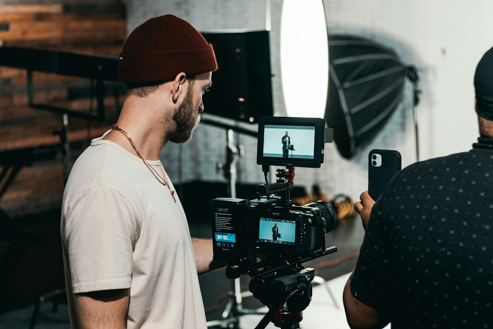
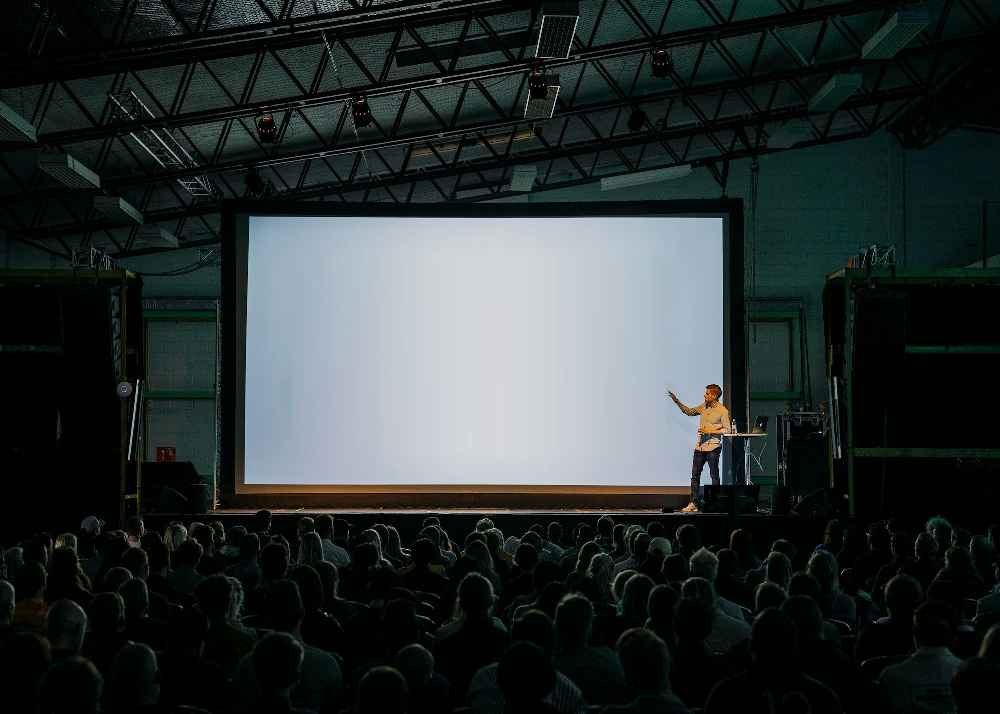
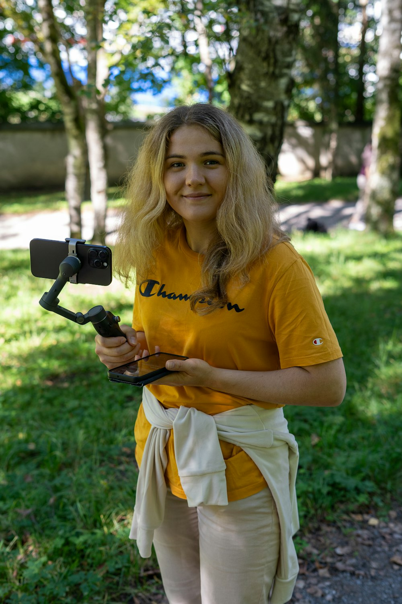
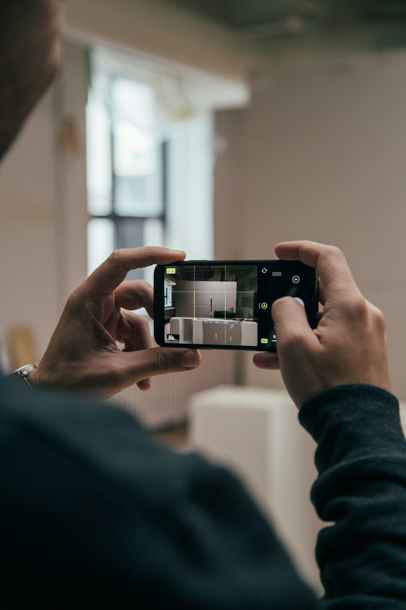
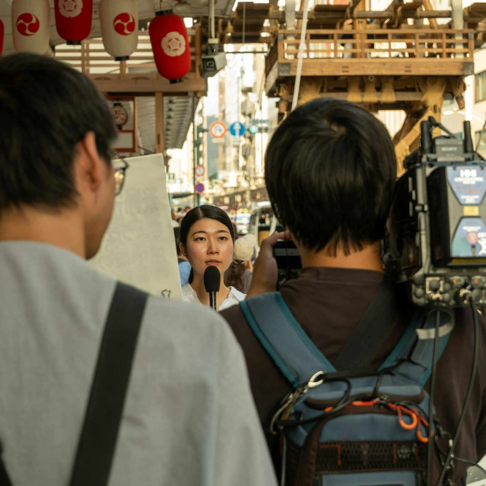
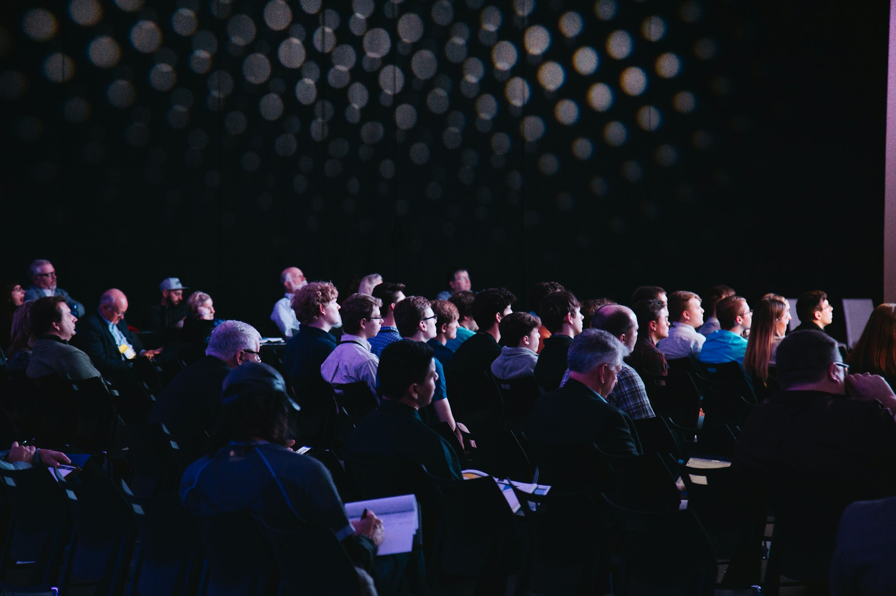
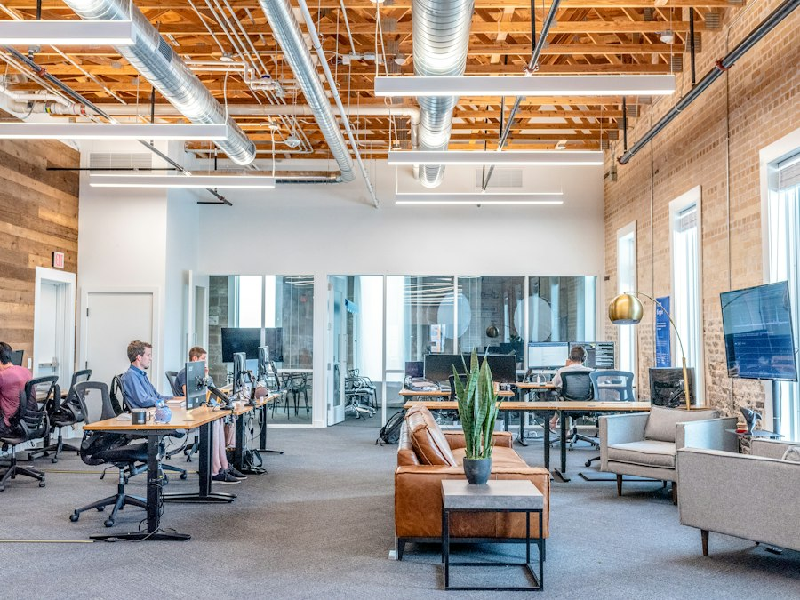
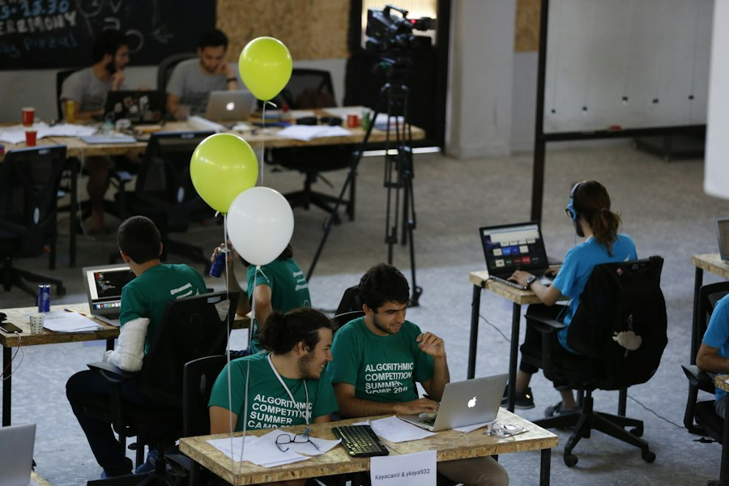
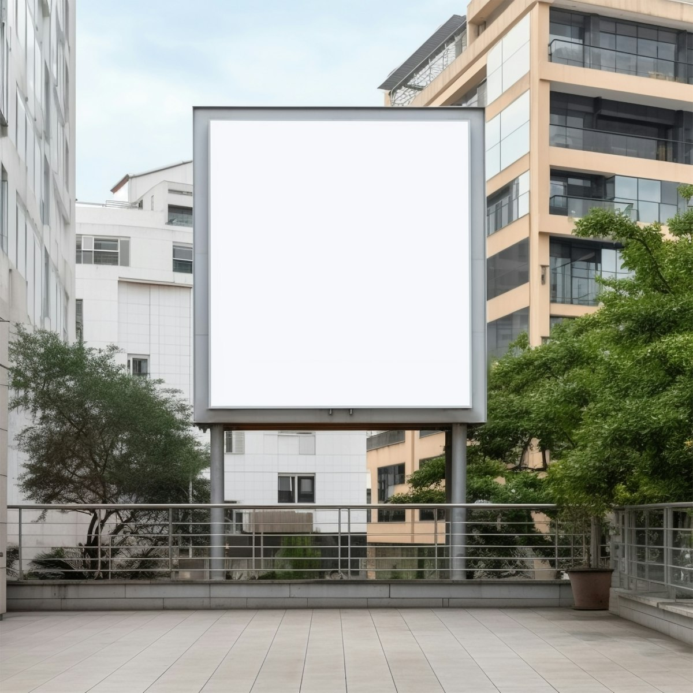

YouTubeVlogs & interviews
Build content people return to
Recurring YouTube formats: founder-led vlogs and interview series that give people a reason to come back.
Content, founder branding, employee advocacy, creators and unconventional campaigns, working as one marketing engine that turns attention into sign-ups.
See the planSlidely can be more than a useful AI product. It can be the name people think of whenever they need to present, tell a story, or get an idea across.

Each channel does one job, and each one feeds the next.

YouTubeVlogs & interviews
Recurring YouTube formats: founder-led vlogs and interview series that give people a reason to come back.

inLinkedInTeam posts
A LinkedIn content system that helps each team member post in their own voice and extend Slidely’s reach.

Instagram + OfflineCreators & events
Instagram storytelling and creators, street interviews on YouTube and Instagram, and offline activations.
Creative ideas, backed by distribution, hands-on execution and measurable learning.
What I’d publish on YouTube, LinkedIn and Instagram.
YouTube contentFounder-led vlog series
A recurring YouTube vlog series that makes the journey of building Slidely worth following.
Slidely has started publishing on YouTube. I’d build on that by taking people behind the scenes of a YC-backed startup: the people, decisions, experiments and challenges. Every video tells a clear story, so it never feels like a product announcement.
A recognisable founder and company brand, and a continuing reason to follow Slidely.

inLinkedIn contentEmployee-led distribution
For a B2B product, Slidely’s LinkedIn company page shouldn’t carry the whole burden of marketing. The team’s own profiles can do far more.
Instagram contentCreative direction & creator collaborations
Formats built around the problems people actually have with decks, so Slidely’s value is easy to understand and worth sharing.
I’d partner with Instagram creators in startups, consulting, productivity and careers on practical demonstrations instead of sponsored posts. Start with a few, test the angles, and choose partners on audience quality and product interest rather than follower count.


YouTube + InstagramStreet interview series
Full interviews go on YouTube; the sharpest moments become Instagram Reels. Strangers pitch an idea: a startup, a side project, something unexpected. The focus is the person and the pitch. Slidely comes in when we show how a stronger presentation lands it.
Let people experience Slidely firsthand, through moments that show the product working and give them something worth sharing.

Offline eventThe Presentation Rescue Desk
A small desk at coworking spaces and startup events. People bring a messy slide and watch Slidely transform it.

Offline eventThe 10-Minute Deck Challenge
With startup communities, business schools and entrepreneurship groups. Everyone gets the same brief and Slidely, and the room votes for the most compelling deck.
Hands-on trials, community partnerships, and content made by the people who’ll use Slidely.

Offline campaignOutdoor posters
A witty, minimal campaign in coworking spaces and startup hubs. Each poster names one familiar frustration and carries a QR code to the right demo.
I’d pilot it small first: test the message and the locations, then look at QR visits and qualified sign-ups before recommending a larger rollout.

No expensive outdoor campaign until the idea has proven itself in one small, practical test.
Start with a single practical event.
Capture the experience as it happens.
Turn the moment into content.
Check whether it moved people to the product.
The objective isn’t simply to make Slidely visible. It’s to make that visibility useful.